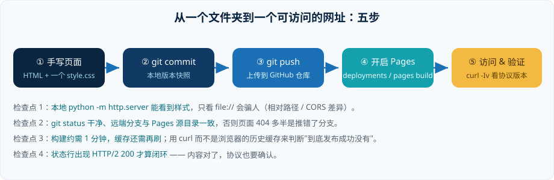

计算机网络实验第一题要求"做一个网页并发布"。我原本打算直接套一个 Hexo 模板，十分钟后放弃了：如果我自己都说不清这个页面是怎么被浏览器解析出来的，那这个实验就白做了。于是我决定手写，只用最原始的两件东西 —— HTML 和 CSS。
这篇文章既是实验记录，也是给三个月后的自己看的：当时踩的三个坑，别再踩第四次。
1. 为什么坚持手写
框架会把三件事变得看不见：link 与 script 的加载顺序、静态资源的真实 URL、以及浏览器究竟发起了多少次请求。而这三件事恰好是计网这门课要考的。手写一个页面，我至少要回答：CSS 放在 <head> 里和放在末尾有什么区别？为什么图片要用相对路径？——这些问题在脚手架里永远不会暴露。
2. 文件结构
整个站点不到 6 个文件，一个 CSS 复用四页：
# 站点目录（GitHub Pages 直接发布仓库根目录） my-web-home/ ├── index.html # 首页 / 自我简介 ├── ustc.html # 科大印象 ├── research.html # 研究分享 ├── blog.html # 博客（本文） ├── http.html # HTTP 版本观测记录 ├── css/style.css # 全站唯一样式表 └── img/ # 自制 SVG 插画 + PIL 生成的雷达图
页面之间靠相对路径互链，这样将来无论从站点根目录还是子目录部署都不用改链接：
<a href="research.html">研究分享</a> # ✔ 相对路径 <img src="img/campus.svg" alt="校园插画"> # ✔ alt 一定要写，无障碍 + 加载失败可兜底
顺手记一下真正让我改观的两个细节：
- CSS 变量：
:root里定义--navy、--cyan，改主题只需动 4 行； - Grid 三列 → 一列：一段
@media (max-width:860px)就让手机上不再横向溢出，比想象简单得多。
3. 用 git 把代码推上去

# 初始化仓库 git init git add . git commit -m "feat: 静态站点第一版（四页 + 共享样式）" # 关联远端并推送（我直接用 gh 建了个公开仓库） gh repo create my-web-home --public --source=. --push # 等价于 remote add + push # 之后每次改完页面，只需三行 git add -A && git commit -m "docs: 新增 HTTP 观测页" && git push origin main
4. 开启 Pages：我踩的三个坑
仓库推上去之后并不会自动有网站，要显式告诉 GitHub "把哪个分支的哪个目录当作站点根"：
# 用 API 打开 Pages（也可以在 Settings → Pages 里点两下） gh api -X POST repos/A1exthegreat/my-web-home/pages -f source[branch]=main -f source[path]=/ # 看构建状态 gh api repos/A1exthegreat/my-web-home/pages --jq .status # building → built
| 现象 | 我以为 | 实际上 |
|---|---|---|
访问 /my-web-home/ 返回 404 | 构建失败 | Pages 源目录写成了 /docs，而我推的是根目录 |
| 样式全丢，只剩纯文本 | CSS 写错了 | 本地 file:// 打开正常，但绝对路径 /css/style.css 在子路径部署下指向了站点外 |
| 改了内容看不到 | 没部署成功 | 响应头 cache-control: max-age=600，浏览器还在吃缓存 —— Ctrl+F5 或换 curl 验证 |
curl，不要用浏览器。浏览器会替你缓存、会替你补全协议、还会替你记住上一次的错误页面。5. 最后一个问题：这是 HTTP 几？
站点能访问之后，实验还有一问：这个网页用的 HTTP 是哪个版本？一行命令就能看到协商结果：
curl -sS -I -o /dev/null -w "%{http_version} %{url_effective}\n" https://a1exthegreat.github.io/my-web-home/ # 输出：2 https://a1exthegreat.github.io/my-web-home/
HTTP/2。完整的过程报文（TLS ALPN 协商、响应头、强制降级到 1.1 的对照实验）我都放在 HTTP 观察 这一页，那里还对比了 h1.1 / h2 / h3 的差异。
6. 小结与下一步
这次实验最实在的收获不是"会写 HTML"，而是把一条完整链路串起来了：编辑文件 → 版本快照 → 远端仓库 → 静态托管 → CDN 缓存 → 协议协商。以前这门课的每一章各自独立，现在它们在一个具体的 URL 上会合了。
接下来想做的三件事：给站点加一个真正的 sitemap.xml 与 RSS；把 ETag / If-None-Match 的 304 过程抓下来看一遍；再给页面配上 HTTP 严格传输安全（HSTS）与预加载的实验 —— 前提是先把报告写完交给老师。
本文提到的链接
- 本站源码：github.com/A1exthegreat/my-web-home
- Pages 部署文档：Configuring a publishing source
- HTTP/2 标准：RFC 9113（HTTP/2）
- HTML 语法速查：MDN Web HTML
- 实验要求的示例站：myworldandyou.github.io